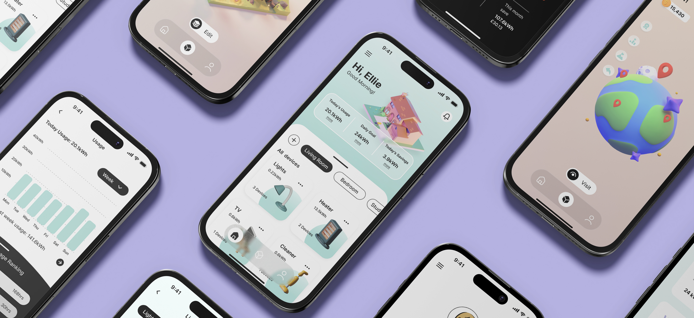
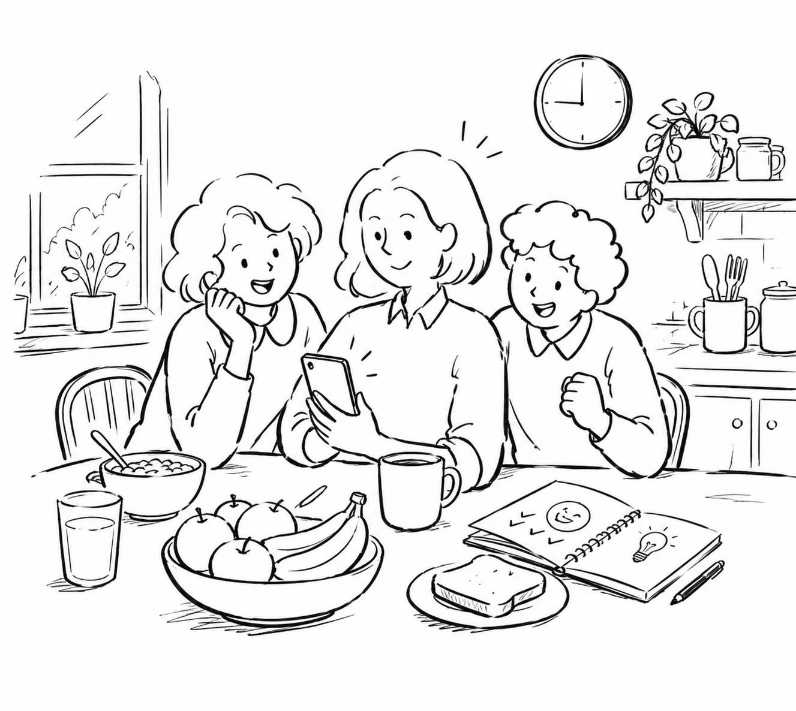
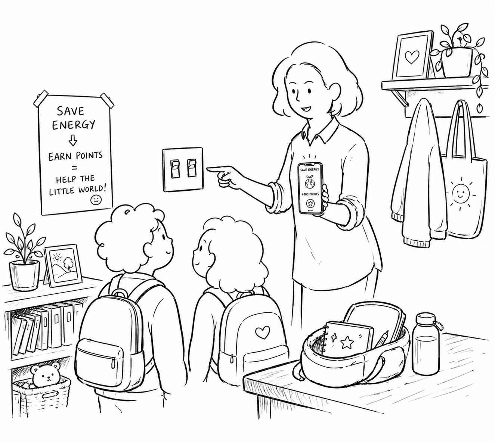
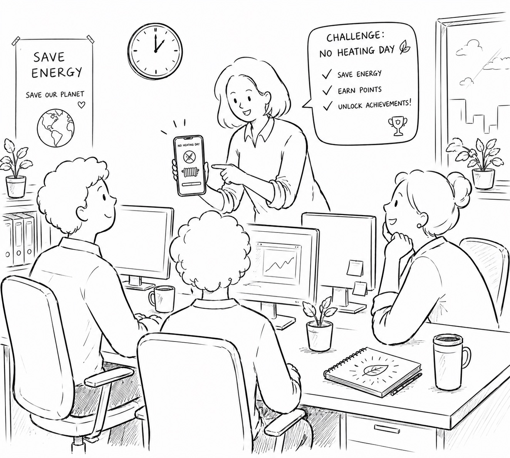
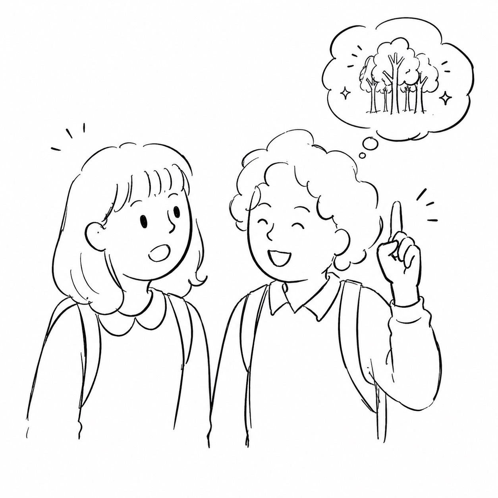
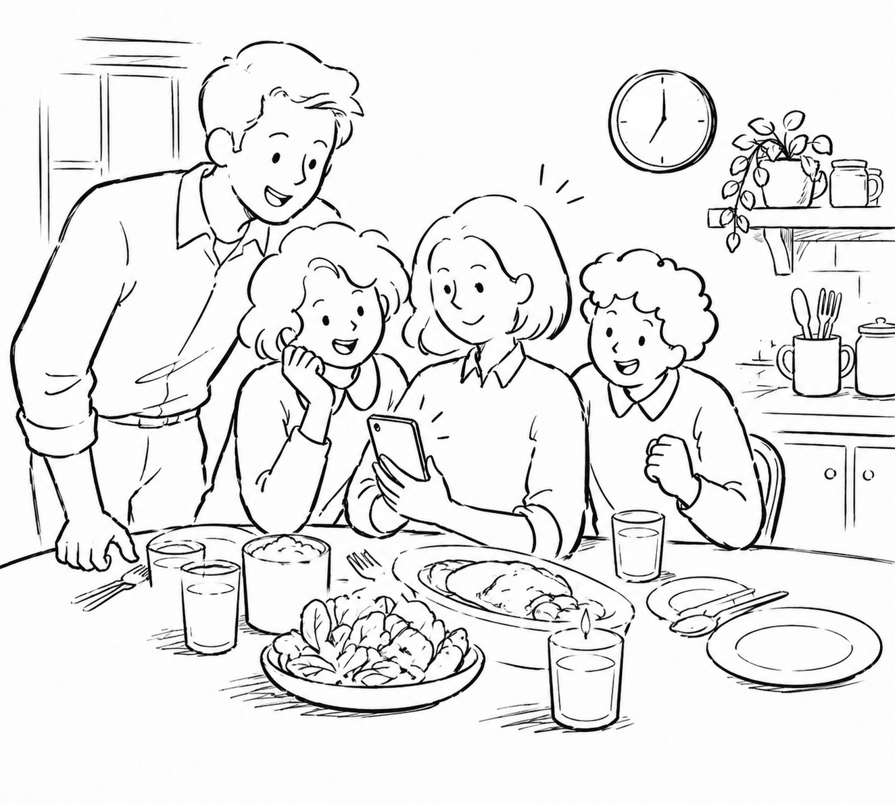
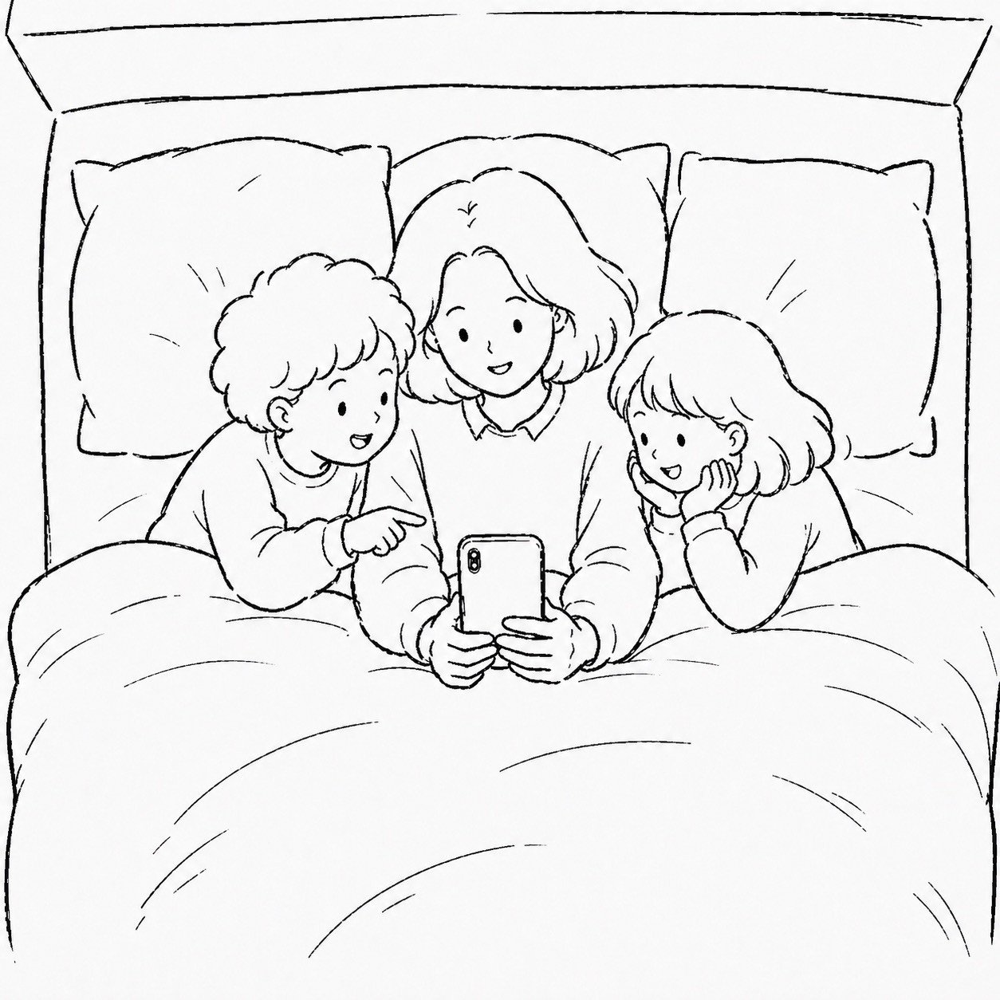

Designing a smart-meter app for time-poor young families that turns climate action into a family game.为忙碌的年轻家庭，设计一款智能电表应用 —— 把节能减碳，变成一场家庭游戏。
Understanding the behaviours, barriers and motivations of socially-active families - so energy management can fit into busy daily life rather than fight against it.理解社交活跃型家庭的行为、障碍与动机，让能源管理融入忙碌的日常生活，而不是与之对抗。
COM-BCOM-B 分析Proto-Persona原型人物Empathy MapEmpathy MapKey Insights关键洞察User Need Statements用户需求陈述MoSCoWMoSCoW

Background背景
UK households are responsible for 27% of total carbon emissions - yet most people never look at their meter.英国家庭能耗占全国碳排放的 27% - 但绝大多数人从不会看自己的电表。
Climate change is reshaping the global energy system. Continuously rising temperatures and extreme weather events are altering demand patterns and the reliability of supply (Cronin et al., 2018). Smart meters paired with AI offer a new way for households to take part - but only if the experience is meaningful.气候变化正在重塑全球能源系统。持续上升的气温和极端天气事件改变着用电需求模式，也影响着供应系统的可靠性（Cronin 等, 2018）。智能电表与 AI 的结合为家庭参与提供了新机会 - 但前提是体验本身要有意义。
"Proactive consumer engagement with smart metering systems is crucial for the effective decentralization of energy systems.""消费者对智能电表系统的主动参与，对于能源系统的有效去中心化至关重要。"
- Hope et al., 2018
27%
of UK total carbon emissions come from household energy use.英国总碳排放中来自家庭能耗的比例。
1
persona - Young Good-Life Families: time-poor, financially stable, socially driven.个核心人物 - "年轻美好生活"家庭：时间紧、经济稳、社交驱动。
4
design principles to anchor the product, from clearly trackable to community connected.条设计原则贯穿产品始终，从清晰可追踪到社区互联。
Part-time manager at the same firm as her husband与丈夫在同一家公司担任兼职项目经理
Reduces hours to manage family and kids' activities为照顾家庭与孩子活动而缩减工时
Main planner for family events家庭事务的主要组织者
Network of parent friends through kids' sport通过孩子运动课程结识的父母朋友圈
Financially stable but time-limited财务稳定，但时间紧张
End goals最终目标
Invest in smart tech for comfort and convenience投入智能科技以提升舒适与便利
Find easy ways for the family to act on climate together让全家以轻松方式共同参与气候行动
See tangible benefits from energy-saving efforts从节能行动中看见切实的回报
Experience goals体验目标
Make the most of limited time as a busy parent作为忙碌父母，把有限的时间用到极致
Find eco-conscious ways that fit a packed schedule找到能塞进满档行程的环保方式
Receive recognition from peers for steps taken获得同辈对环保行动的认可
Pain points痛点
Can't slow down enough for long-term home upgrades节奏太快，难以为长期家居升级停下脚步
Relies on advice from other parents, not experts依赖其他父母的建议，而非专家指导
Worries complex monitoring kills home enjoyment担心复杂的监控会让家失去乐趣
Empathy mapEmpathy map
Inside Ellie's head - what she thinks, feels and does.走进 Ellie 的内心 - 她在想什么、感受什么、又在做什么。
Thinking思考
Find eco-conscious ways fitting my family's busy lifestyle如何找到契合家庭忙碌节奏的环保方式
What energy-saving initiatives would be rewarding for my whole family?什么样的节能活动能让全家都觉得有意义？
How can I get recognition from peers for our environmental efforts?如何让同辈认可我们的环保努力？
Feeling感受
Overwhelmed by time constraints, hard to prioritise home improvements被时间压力压得喘不过气，很难为家居升级腾出精力
Unsure where to find reliable energy guidance, relies on other parents不知道哪里能找到可靠的节能建议，只能问其他父母
Worries complex monitoring might detract from home comfort担心繁琐的监控会牺牲家的舒适感
Doing行动
Invests in smart home tech for convenience and lifestyle投入智能家居以提升便利与生活质量
Participates in climate-conscious family activities together和家人一起参与气候相关的家庭活动
Tracks energy savings, seeks recognition for efforts记录节能成果，寻求外界对努力的认可
Pain points痛点
Kids don't notice or appreciate her eco-friendly steps孩子察觉不到、也不在意她的环保举动
Energy trading sounds too complex - no time to learn properly"能源交易"听起来太复杂 - 根本没时间认真去学
Small changes may not have meaningful climate impact担心小小改变难以带来真正的气候影响
Goals目标
Receive appreciation from children for sustainability efforts让孩子认可妈妈在可持续上的努力
As a novice, build confidence in energy management without too much time作为新手，在不投入太多时间的前提下建立能源管理的信心
Foster a community where everyone does their part for climate营造一个人人为气候出力的社区
Make climate action central to our family identity让气候行动成为家庭身份的一部分
Problem framing问题界定
From a generic time-poverty brief to a sharper, social one.从笼统的"时间紧"问题，收敛到更聚焦的社交切入点。
Initial初版
How might we design a mobile app that uses smart meter data to help time-poor young families who want to contribute to climate action but struggle to find time to understand and change their energy consumption patterns?我们如何设计一款利用智能电表数据的移动应用，帮助那些想参与气候行动、却忙到无暇理解和改变能耗模式的年轻家庭？
Final终版
How might we design a mobile app that uses smart meter data to help social-oriented young families with school-age children understand their device-level energy through a world-building experience that rewards better usage and engages them with climate action?我们如何为有学龄孩子、社交活跃的年轻家庭设计一款移动应用，借助智能电表数据，通过"建造世界"式的体验让他们理解设备级能耗，并以奖励机制鼓励他们改变用电习惯、积极参与气候行动？
COM-B AnalysisCOM-B 分析
Capability, Opportunity, Motivation能力 · 机会 · 动机
Rather than focusing on energy data alone, the analysis pointed to leveraging a community-oriented mindset and the desire to set a good example for their children.分析显示：与其只盯着能耗数据，不如借力他们以社区为导向的心态，以及"想给孩子做榜样"的内在动机。
Capability能力
Lack of expertise to manage household energy缺乏管理家庭能耗的专业知识
Unfamiliar with translating smart meter data看不懂、也不会解读智能电表的数据
Difficulty grasping energy optimisation complexity难以理解能耗优化的复杂逻辑
No experience in community energy events没有参与社区能源活动的经验
No easy way to compare neighbourhood energy use缺乏与邻居能耗对比的简单方式
Lack of community energy activities for families几乎没有面向家庭的社区能源活动
Missing supportive atmosphere for climate action缺少支持气候行动的氛围
Motivation动机
Want to set environmental example for children希望为孩子树立环保榜样
Lack of direct feedback on behaviour impact行为带来的影响缺乏直接反馈
Open to collective action but need clear guidance愿意参与集体行动，但需要清晰的指引
Worried energy measures reduce home comfort担心节能措施会牺牲家的舒适度
Key findings关键发现
Four patterns that shaped the design direction.四个塑造了设计方向的关键规律。
Finding 01发现 01
Motivated by social influence驱动力来自社交影响
Limited by understanding of energy data, but strongly motivated by what peers think and do. Community action beats personal data.虽然看不太懂能耗数据，但同辈的看法和做法是强力驱动。社区行动比个人数据更能推动改变。
Finding 02发现 02
Strong school network potential校园社群有强传播潜力
Active participation in school networks means community-based interventions have a natural, trusted channel to spread through.家长们活跃于校园社交圈，让以社区为单位的干预拥有天然可信的传播渠道。
Finding 03发现 03
Must fit the existing routine必须融入既有的生活节奏
Solutions that demand a change in lifestyle will be ignored. The app has to slot into what the family already does, not compete with it.任何要求改变生活方式的方案都会被忽略。应用必须嵌入家庭已有的日常，而不是与之争夺时间。
Finding 04发现 04
Peer comparison over raw data同辈对比胜过原始数据
kWh numbers mean nothing. Knowing that a neighbour saved more this week is far more motivating than any energy dashboard."千瓦时"这类数字本身没有意义。知道"这周邻居比我省得更多"远比任何能耗仪表盘更能激发行动。
Key insights核心洞察
Two truths that flipped the brief.两个洞察让命题彻底反转。
01 - Family engagement01 - 家庭参与
Energy saving needs to become a meaningful family activity - with clear feedback and rewards - rather than a parent-only chore.节能需要从父母独自负担的家务，变成有清晰反馈与奖励、值得全家共同参与的活动。
02 - Social experience02 - 社交体验
Pair energy management with a social layer. Community engagement beats complex data monitoring for this audience.为能源管理叠加一层社交体验。对这一群体而言，社区参与远胜过复杂的数据监控。
01
As a mom of young children作为有孩子的母亲
I need family-friendly energy saving activities so reducing energy use becomes a rewarding family experience.我需要适合全家参与的节能活动，让减少能耗成为有回报感的家庭体验。
Driven by驱动因素
Wants to set an example - abstract energy data does not connect with kids emotionally.想为孩子树立榜样 - 但抽象的能耗数据无法在情感层面打动他们。
02
As a socially-active working mom作为社交活跃的职场妈妈
I need ways to combine energy saving with social activities so I can have impact through community engagement.我需要能把节能与社交活动结合的方式，让我可以通过社区参与产生影响。
Four feature pillars, mapped to the principles.四大功能支柱，分别对应四条设计原则。
Clearly Trackable清晰可追踪
An intuitive dashboard surfacing real-time and historical energy data for each household device.直观的仪表盘，呈现每个家电设备的实时与历史能耗数据。
Business outcome - 商业目标 - Empower users to understand and manage their home energy use.让用户能够理解并管理家庭能耗。
Design principle - 对应原则 - Clearly Trackable清晰可追踪
Visually Rewarding视觉化奖励
Visualise savings through progress bars, badges and a growing world that rewards effort.通过进度条、徽章与不断生长的世界，把节能成果转化为可见的奖励。
Business outcome - 商业目标 - Drive engagement, motivating continued conservation.提升参与度，激励用户持续节能。
Design principle - 对应原则 - Visually Rewarding视觉化奖励
Family Bonding家庭联结
Interactive activities and challenges for the whole family - shared goals, friendly competitions.面向全家的互动活动与挑战 - 共同目标、友好竞争。
Business outcome - 商业目标 - Strengthen family cooperation around energy use.在能源话题上增进家庭协作。
Design principle - 对应原则 - Family Bonding家庭联结
Community Connected社区互联
Share and compare energy data with neighbours; join community-wide energy challenges.与邻里分享与对比能耗数据，加入社区级别的节能挑战。
Business outcome - 商业目标 - Build community awareness and wider climate action.扩大社区影响力，推动更广泛的气候行动。
Design principle - 对应原则 - Community Connected社区互联
Context scenario情境剧本
A day in Ellie's life with EcoWorld.Ellie 与 EcoWorld 的一天。
Six moments - from breakfast to bedtime - showing how the app slots into a busy family routine without competing with it.从早餐到入睡的六个瞬间 - 展示这款应用如何嵌入忙碌的家庭日常，而不是与之争抢时间。
Breakfast早餐

The day starts with a small win.一天从一个小胜利开始。
At breakfast, Ellie and the kids open EcoSmart to check yesterday's energy. The app congratulates them on a drop and suggests a "lights out" evening challenge - they accept on the spot.早餐时，Ellie 和孩子们打开 EcoSmart 查看昨天的用电。应用恭喜他们用电下降，并建议今晚来一个"熄灯"挑战 - 全家当场答应。
School prep送学前

Habits become points.每一个好习惯都换成积分。
While helping the kids get ready, Ellie reinforces switching off lights. Each habit translates into points that grow their little world inside the app.在帮孩子们准备上学时，Ellie 顺势强化"随手关灯"的习惯，每个动作都转化成积分，让应用里的小世界一点点生长。
Lunch break午休

Bringing colleagues into the game.把同事也拉进这场游戏。
At lunch, the app challenges Ellie to a "no heating day" at the office. To unlock a new achievement, she rallies her colleagues to take part too.午休时，应用向 Ellie 发起办公室"今日不开暖气"挑战。为了解锁新成就，她拉上同事们一起参与。
School pickup放学接娃

The kids are showing off.孩子们已经在向朋友炫耀。
At pickup, Ellie overhears her children excitedly telling friends about the new features they unlocked overnight - every action at home has a fun, visible consequence.接孩子时，Ellie 听见他们兴奋地向小伙伴展示昨晚新解锁的功能 - 家里每一个动作，都有有趣且看得见的回响。
Dinner晚餐

Candlelight, and a brand new land.烛光晚餐，解锁全新土地。
Dinner happens by candlelight to complete the "switch off the lights" challenge. The app shows Ben and Lucy the savings - and a new land in their world unlocks as a reward.为了完成"熄灯"挑战，全家点起蜡烛吃晚饭。Ellie 在应用里给 Ben 和 Lucy 看节省的电量 - 他们的小世界也作为奖励，解锁了一块新的土地。
Bedtime睡前

Reflecting on the day.睡前一起回望这一天。
Before bed, Ellie and the kids decorate their little world together - placing new items and talking about why each one matters as a reward for the family's effort.睡前，Ellie 和孩子们一起装饰他们的小世界 - 摆放新物件，并聊聊每一件背后是哪份家庭努力的回报。
Site mapSite map
Three pillars holding the whole product together.支撑整个产品的三大支柱。
A site map drawn early in design to keep navigation intuitive - Homepage as the entry, Energy Land for tracking and rewards, Contribute for community.设计早期绘制的 Site map，确保导航直观，主页作为入口，Energy Land 负责追踪与奖励，Contribute 承载社区互动。